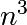

| author: | Gaël Varoquaux |
|---|
Donald Knuth
“Premature optimization is the root of all evil”
This chapter deals with strategies to make Python code go faster.
Prerequisites
Chapters contents
No optimization without measuring!
In IPython, use timeit (http://docs.python.org/library/timeit.html) to time elementary operations:
In [1]: import numpy as np
In [2]: a = np.arange(1000)
In [3]: %timeit a ** 2
100000 loops, best of 3: 5.73 us per loop
In [4]: %timeit a ** 2.1
1000 loops, best of 3: 154 us per loop
In [5]: %timeit a * a
100000 loops, best of 3: 5.56 us per loop
Use this to guide your choice between strategies.
Note
For long running calls, using %time instead of %timeit; it is less precise but faster
Useful when you have a large program to profile, for example the following file:
import numpy as np
from scipy import linalg
from ica import fastica
def test():
data = np.random.random((5000, 100))
u, s, v = linalg.svd(data)
pca = np.dot(u[:10, :], data)
results = fastica(pca.T, whiten=False)
test()
In IPython we can time the script:
In [1]: %run -t demo.py
IPython CPU timings (estimated):
User : 14.3929 s.
System: 0.256016 s.
and profile it:
In [2]: %run -p demo.py
916 function calls in 14.551 CPU seconds
Ordered by: internal time
ncalls tottime percall cumtime percall filename:lineno(function)
1 14.457 14.457 14.479 14.479 decomp.py:849(svd)
1 0.054 0.054 0.054 0.054 {method 'random_sample' of 'mtrand.RandomState' objects}
1 0.017 0.017 0.021 0.021 function_base.py:645(asarray_chkfinite)
54 0.011 0.000 0.011 0.000 {numpy.core._dotblas.dot}
2 0.005 0.002 0.005 0.002 {method 'any' of 'numpy.ndarray' objects}
6 0.001 0.000 0.001 0.000 ica.py:195(gprime)
6 0.001 0.000 0.001 0.000 ica.py:192(g)
14 0.001 0.000 0.001 0.000 {numpy.linalg.lapack_lite.dsyevd}
19 0.001 0.000 0.001 0.000 twodim_base.py:204(diag)
1 0.001 0.001 0.008 0.008 ica.py:69(_ica_par)
1 0.001 0.001 14.551 14.551 {execfile}
107 0.000 0.000 0.001 0.000 defmatrix.py:239(__array_finalize__)
7 0.000 0.000 0.004 0.001 ica.py:58(_sym_decorrelation)
7 0.000 0.000 0.002 0.000 linalg.py:841(eigh)
172 0.000 0.000 0.000 0.000 {isinstance}
1 0.000 0.000 14.551 14.551 demo.py:1(<module>)
29 0.000 0.000 0.000 0.000 numeric.py:180(asarray)
35 0.000 0.000 0.000 0.000 defmatrix.py:193(__new__)
35 0.000 0.000 0.001 0.000 defmatrix.py:43(asmatrix)
21 0.000 0.000 0.001 0.000 defmatrix.py:287(__mul__)
41 0.000 0.000 0.000 0.000 {numpy.core.multiarray.zeros}
28 0.000 0.000 0.000 0.000 {method 'transpose' of 'numpy.ndarray' objects}
1 0.000 0.000 0.008 0.008 ica.py:97(fastica)
...
Clearly the svd (in decomp.py) is what takes most of our time, a.k.a. the bottleneck. We have to find a way to make this step go faster, or to avoid this step (algorithmic optimization). Spending time on the rest of the code is useless.
The profiler is great: it tells us which function takes most of the time, but not where it is called.
For this, we use the line_profiler: in the source file, we decorate a few functions that we want to inspect with @profile (no need to import it):
@profile
def test():
data = np.random.random((5000, 100))
u, s, v = linalg.svd(data)
pca = np.dot(u[:10, :], data)
results = fastica(pca.T, whiten=False)
Then we run the script using the kernprof.py program, with switches - and -v:
~ $ kernprof.py -l -v demo.py
Wrote profile results to demo.py.lprof
Timer unit: 1e-06 s
File: demo.py
Function: test at line 5
Total time: 14.2793 s
Line # Hits Time Per Hit % Time Line Contents
==============================================================
5 @profile
6 def test():
7 1 19015 19015.0 0.1 data = np.random.random((5000, 100))
8 1 14242163 14242163.0 99.7 u, s, v = linalg.svd(data)
9 1 10282 10282.0 0.1 pca = np.dot(u[:10, :], data)
10 1 7799 7799.0 0.1 results = fastica(pca.T, whiten=False)
The SVD is taking all the time. We need to optimise this line.
Once we have identified the bottlenecks, we need to make the corresponding code go faster.
The first thing to look for is algorithmic optimization: are there ways to compute less, or better?
For a high-level view of the problem, a good understanding of the maths behind the algorithm helps. However, it is not uncommon to find simple changes, like moving computation or memory allocation outside a for loop, that bring in big gains.
In both examples above, the SVD - Singular Value Decomposition - is what takes most of the time. Indeed, the computational cost of this algorithm is roughly  in the size of the input matrix.
However, in both of these example, we are not using all the output of the SVD, but only the first few rows of its first return argument. If we use the svd implementation of scipy, we can ask for an incomplete version of the SVD. Note that implementations of linear algebra in scipy are richer then those in numpy and should be preferred.
In [3]: %timeit np.linalg.svd(data)
1 loops, best of 3: 14.5 s per loop
In [4]: from scipy import linalg
In [5]: %timeit linalg.svd(data)
1 loops, best of 3: 14.2 s per loop
In [6]: %timeit linalg.svd(data, full_matrices=False)
1 loops, best of 3: 295 ms per loop
In [7]: %timeit np.linalg.svd(data, full_matrices=False)
1 loops, best of 3: 293 ms per loop
Real incomplete SVDs, e.g. computing only the first 10 eigenvectors, can be computed with arpack, available in scipy.sparse.linalg.eigsh.
Computational linear algebra
For certain algorithms, many of the bottlenecks will be linear algebra computations. In this case, using the right function to solve the right problem is key. For instance, an eigenvalue problem with a symmetric matrix is easier to solve than with a general matrix. Also, most often, you can avoid inverting a matrix and use a less costly (and more numerically stable) operation.
Know your computational linear algebra. When in doubt, explore scipy.linalg, and use %timeit to try out different alternatives on your data.
A complete discussion on advanced use of numpy is found in chapter Advanced Numpy, or in the article The NumPy array: a structure for efficient numerical computation by van der Walt et al. Here we discuss only some commonly encountered tricks to make code faster.
Vectorizing for loops
Find tricks to avoid for loops using numpy arrays. For this, masks and indices arrays can be useful.
Broadcasting
Use broadcasting to do operations on arrays as small as possible before combining them.
In place operations
In [1]: a = np.zeros(1e7)
In [2]: %timeit global a ; a = 0*a
10 loops, best of 3: 111 ms per loop
In [3]: %timeit global a ; a *= 0
10 loops, best of 3: 48.4 ms per loop
note: we need global a in the timeit so that it work, as it is assigning to a, and thus considers it as a local variable.
Be easy on the memory: use views, and not copies
Copying big arrays is as costly as making simple numerical operations on them:
In [1]: a = np.zeros(1e7)
In [2]: %timeit a.copy()
10 loops, best of 3: 124 ms per loop
In [3]: %timeit a + 1
10 loops, best of 3: 112 ms per loop
Beware of cache effects
Memory access is cheaper when it is grouped: accessing a big array in a continuous way is much faster than random access. This implies amongst other things that smaller strides are faster (see CPU cache effects):
In [1]: c = np.zeros((1e4, 1e4), order='C')
In [2]: %timeit c.sum(axis=0)
1 loops, best of 3: 3.89 s per loop
In [3]: %timeit c.sum(axis=1)
1 loops, best of 3: 188 ms per loop
In [4]: c.strides
Out[4]: (80000, 8)
This is the reason why Fortran ordering or C ordering may make a big difference on operations. Using numexpr can be useful to automatically optimize code for such effects.
Use compiled code
The last resort, once you are sure that all the high-level optimizations have been explored, is to transfer the hot spots, i.e. the few lines or functions in which most of the time is spent, to compiled code. For compiled code, the preferred option is to use Cython: it is easy to transform exiting Python code in compiled code, and with a good use of the numpy support yields efficient code on numpy arrays, for instance by unrolling loops.
Warning
For all the above: profile and time your choices. Don’t base your optimization on theoretical considerations.